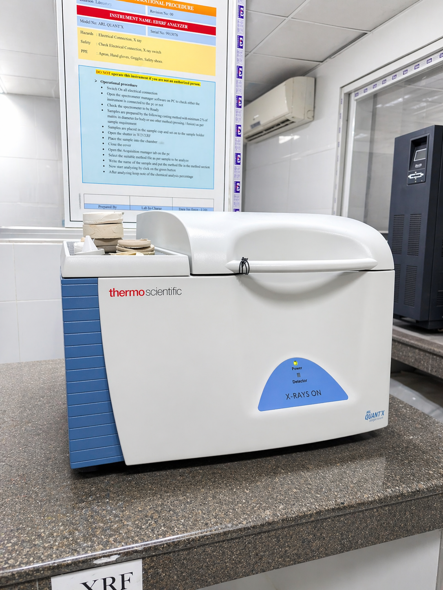
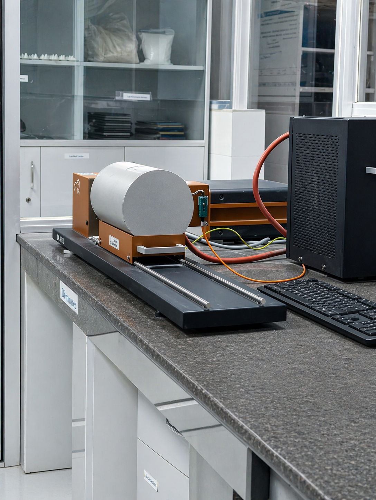
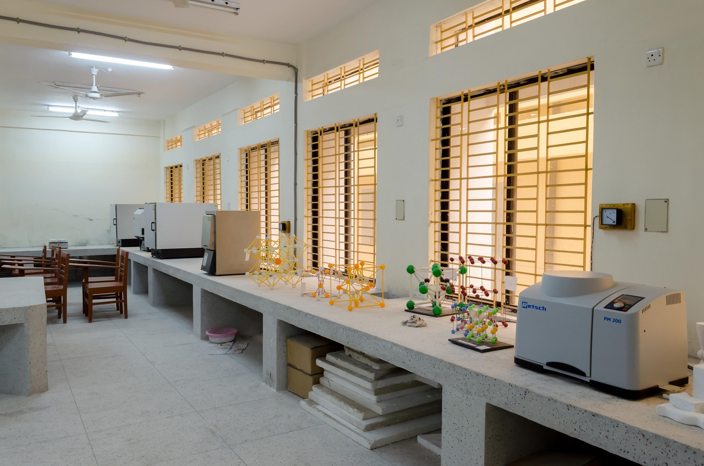
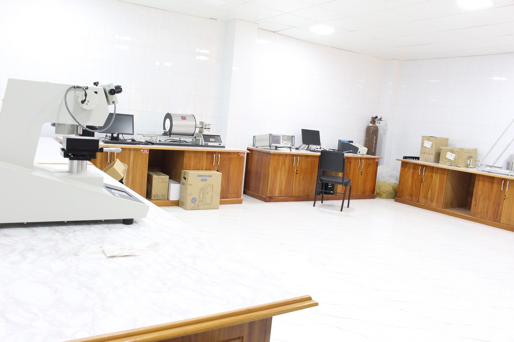

Laboratory & Technical Experience
Advanced Characterization, Processing & Materials Development
My laboratory background combines academic research training and industrial R&D experience in ceramics, thin films, functional oxides, raw material evaluation, process optimization, and analytical characterization.
Characterization Laboratories
Hands-on experience with modern analytical tools used in materials science research.

X-Ray Diffraction (XRD)
Used for phase identification, crystallographic analysis, structural refinement, peak shifting analysis, and phase transition study of ceramic and oxide materials.
Crystal Structure · Phase Analysis
Scanning Electron Microscopy (SEM)
Experienced in surface morphology observation, grain size study, particle distribution analysis, fracture surface review, and microstructural interpretation.
Microstructure · Morphology
X-Ray Fluorescence (XRF)
Applied for elemental and oxide composition analysis of raw materials, ceramic bodies, glaze systems, and synthesized research samples.
Elemental Analysis · Composition
Thermal Analysis
Worked with thermal systems for decomposition study, firing behavior, thermal stability, and temperature-dependent material response.
TGA · DSC · Thermal StabilityProcessing & Fabrication Experience
Practical experience in ceramic manufacturing and material preparation routes.

High Temperature Furnace Processing
Experienced in calcination, sintering, annealing, controlled heating cycles, and densification processes for advanced ceramic systems.
Sintering · Heat Treatment
Optical Microscopy & Sample Preparation
Used for polished section analysis, surface defect review, grain observation, and pre-characterization sample inspection.
Sample Prep · Inspection
Powder Processing & Forming
Hands-on exposure to powder mixing, pellet pressing, binder-assisted shaping, and specimen fabrication for laboratory-scale research.
Powder Processing · Forming
Industrial R&D Laboratory Work
Applied characterization tools and process data to reduce defects, optimize formulations, improve raw material use, and support product development.
R&D · Process OptimizationSoftware & Analysis Tools
FullProf Suite
Rietveld refinement, structural fitting, lattice parameter interpretation.
HighScore Plus
XRD peak identification and diffraction pattern analysis.
OriginPro
Scientific plotting, curve fitting, data presentation, statistical comparison.
ImageJ
Microstructure image analysis and feature measurement.
Microsoft Office
Technical reports, presentations, research documentation.
Engineering Tools
AutoCAD, data handling, basic computational tools.